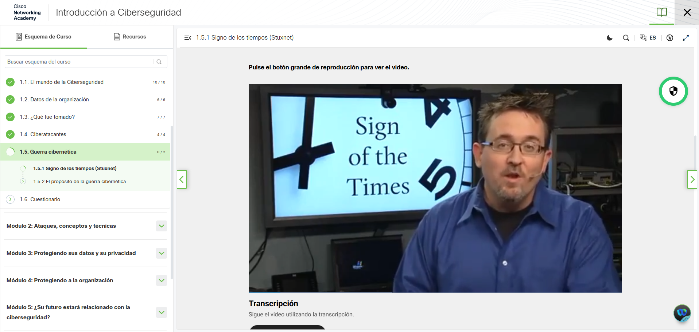
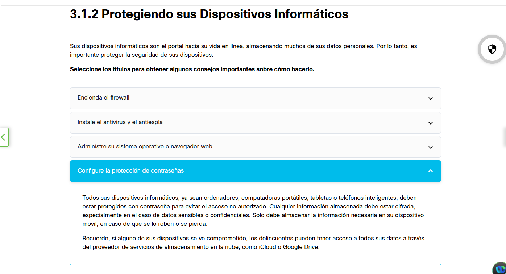
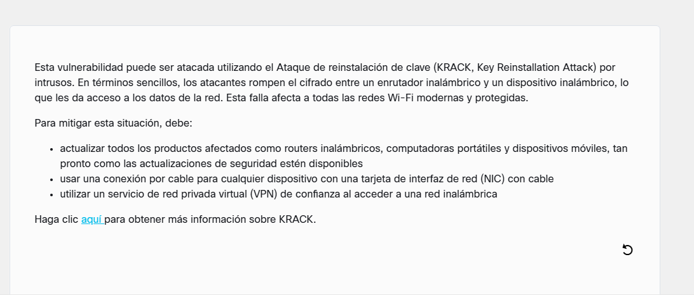
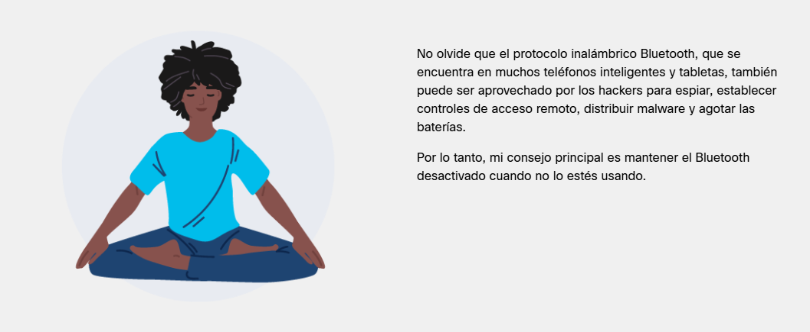
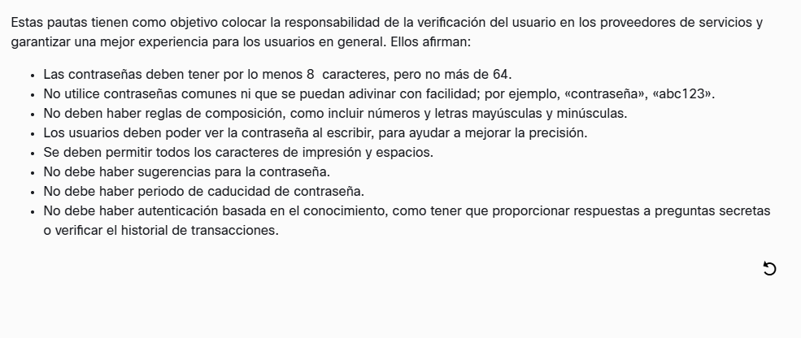
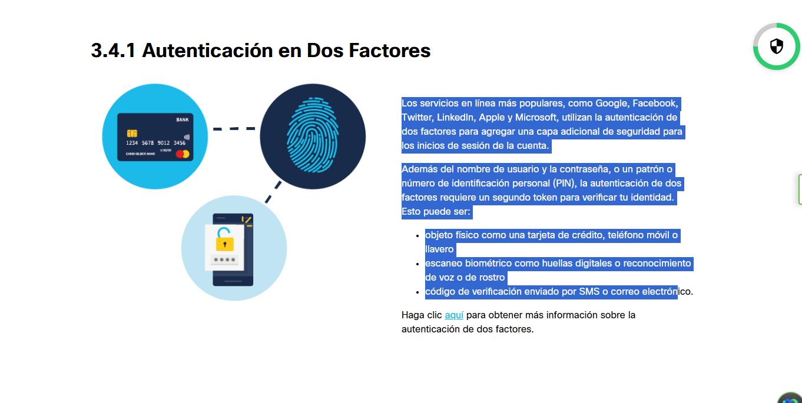
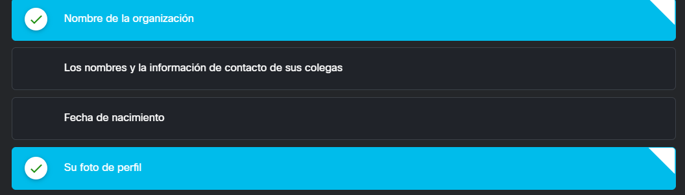
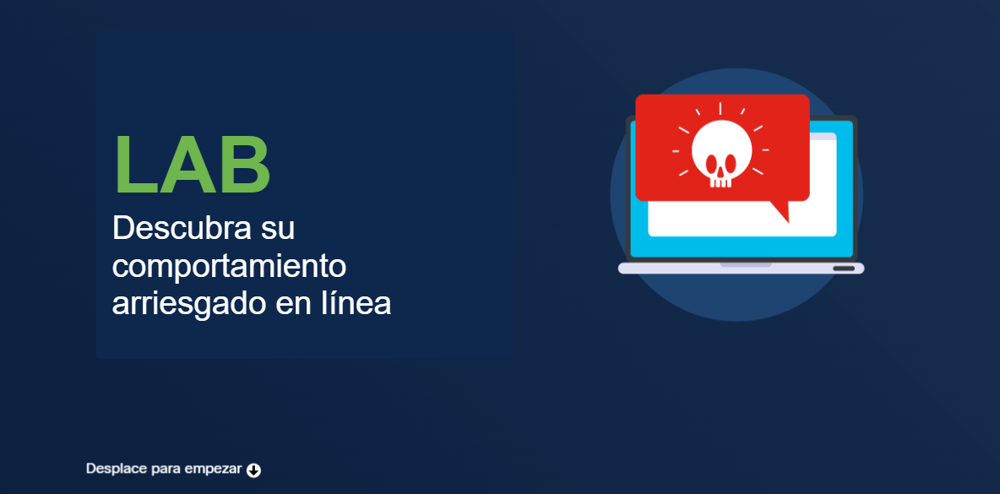

En esta nueva serie del portfolio, voy a detallar la experiencia que he tenido al sacarme mi primera certificación oficial que he tenido de Cisco sobre ciberseguridad, para poder ampliar mis conocimientos en dicha materia.
Lo primero de todo, se puede hacer a través de una academia o hacerlo a tu propio ritmo, por lo que de primera ofrece opciones muy flexibles para cualquier usuario que quiera empezar en este mundillo o ampliar sus conocimientos.

1. Módulos básicos y técnicas de ataque
Después, durante el curso, dan los módulos básicos de seguridad que ya dí en el curso de especialización, por lo que fue coser y cantar. Pero a partir del módulo 2, pude aprender técnicas de ataque que nunca ví o que se dió muy poco, por lo que aumentó mi curiosidad sobre este mundo y hasta investigué un poco sobre el tema para saber como funcionaban. El que más me ha soprendido fue Meltdown/Spectre, una vulnerabilidad física que tienen todos los procesadores del mercado (AMD, Intel, ARM...), descubierta por Google, que consiste en que hay una "ejecución especulativa" dentro del procesador que calcula posibles rutas y usa la más probable de que funcione.
Los atacantes aprovechan dicha vulnerabilidad para poder acceder a datos dentro del sistema operativo, como contraseñas, fotos personales, correos...

2. KRACK y la seguridad de la red Wi-Fi del hogar
Además, gracias también a este curso, descubrí de que la tecnología WPA2 fue crackeada en 2017 a través de una vulnerabilidad llamada "KRACK", rompiendo el cifrado entre el router y el endpoint, pudiendo tomar medidas en mi red personal del hogar para hacerla más segura, como usar una VPN, actualizar INMEDIATAMENTE el router del hogar y los dispositivos del hogar.

3. Bluetooth: un vector de ataque subestimado
Además de los ataques por Bluetooth, que antes no me lo tomaba en serio, pero al ver los ejemplos que dió el curso, me soprendió mucho y me comprometeré a intentar tener menos tiempo activado el Bluetooth del teléfono (solo para usar auriculares inalámbricos o sincronizar datos de mi smartwatch).

4. Contraseñas y autenticación en dos factores
El curso también profundizó en las pautas NIST para la gestión de contraseñas: longitud mínima de 8 caracteres (máximo 64), sin reglas absurdas de composición, permitir todos los caracteres imprimibles, sin caducidad forzada y sin preguntas de seguridad tipo "nombre de tu primera mascota". Y, sobre todo, reforzar el acceso con autenticación en dos factores (2FA) como capa adicional.


5. Huella digital y redes sociales
También me enseñó que si llego a usar redes sociales (aunque no las uso porque no las aguanto y por privacidad), solo tengo que compartir lo esencial para que no sepan mi vida entera sin conocerme: nombre de la organización en la que trabajas, nombres de tus colegas, fecha de nacimiento o foto de perfil son datos que alimentan vectores de social engineering y de credential stuffing.

6. Comportamiento arriesgado en línea
Por último, el curso cierra con un laboratorio interactivo para identificar comportamientos arriesgados en línea: clic en enlaces sospechosos, reutilización de contraseñas, descarga de adjuntos desconocidos, uso de redes Wi-Fi públicas sin VPN. La idea es pasar de la teoría a la práctica: reconocer el riesgo antes de que sea incidente.

Lo que me llevo de esta certificación
- La capa física importa: Meltdown/Spectre demuestran que el silicio también tiene fallos y que securizar solo el software se queda corto.
- El hogar es parte del perímetro: WPA2/KRACK y el Bluetooth convierten al router y al móvil en vectores; actualizar firmware y limitar radios reduce superficie.
- 2FA siempre, sin excusas: mejor TOTP o passkeys que SMS, pero cualquier 2FA es mejor que ninguno.
- La contraseña larga gana a la compleja: las reglas NIST se cargan años de malas prácticas (caducidad, símbolos forzosos, preguntas secretas).
- Menos datos, menos riesgo: lo que no publicas no puede usarse contra ti en un ataque de ingeniería social.